Nonnon Win のインフラを紹介するニャ
[ 互換性 ]
Win95 でも問題なく動くニャ
高ＤＰＩ、ビジュアルスタイル、DWM、ダークモード、Fluent UI に対応しているニャ
Fluent UI は今の所はフェイクだニャ
理由は Win11 のマシンを持っていないからだニャ
[ win_button.c ]
アイコンボタンだニャ
XP のビジュアルスタイルでテーマが適用されないため作ったニャ
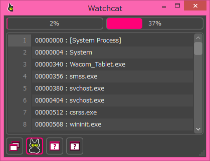
テキストだけにもできるニャ
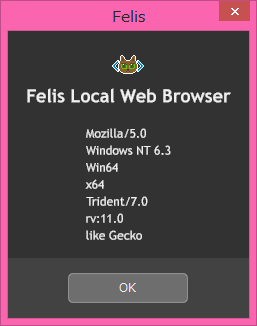
[ win_calendar.c ]
日付を表示するニャ
今の所表示だけでイベントは発生しないニャ
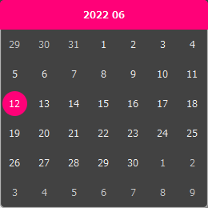
[ win_checkbox.c ]
チェックボックスだニャ
フェードイン・フェードアウトがちゃんと実装されているニャ
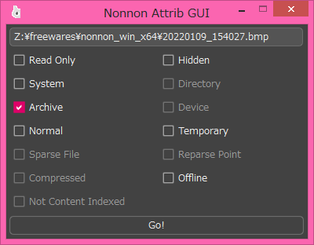
[ win_colorpicker.c ]
色を選択できる機能だニャ
色の所をクリックするとグレースケール機能をオンオフできるニャ
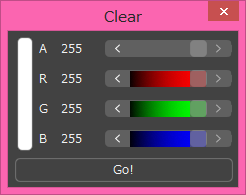
[ win_combobox.c ]
コンボボックスだニャ
ホイールを回した時の挙動の良さが自慢だニャ
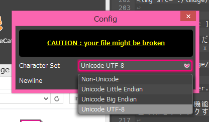
[ win_filer.c ]
ファイル I/O の GUI 部分だニャ
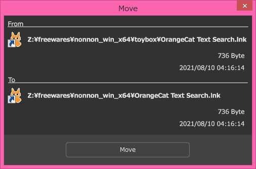
[ win_groupbox.c ]
グループボックスだニャ
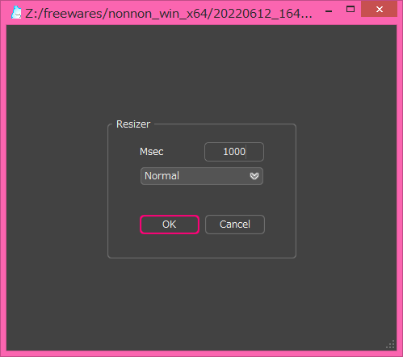
[ win_inputpopup.c ]
入力補助ツールだニャ
配置が QWERTY でないのは意図的だニャ
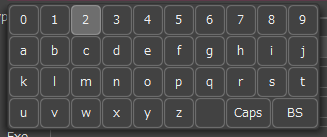
[ win_radiobutton.c ]
ラジオボタンだニャ
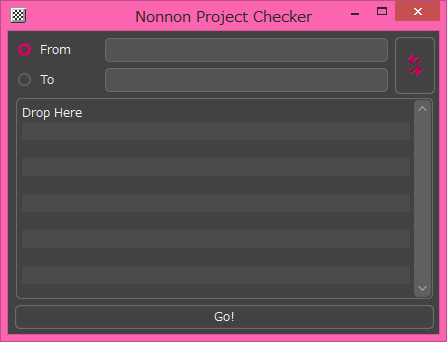
[ win_scrollbar.c ]
スクロールバーだニャ
色んなスタイルが実装されているニャ
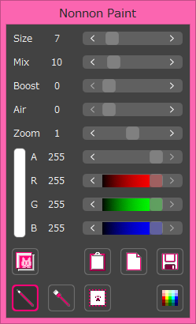
[ win_simplemenu.c ]
メニューだニャ
macOS のように半透明になるニャ
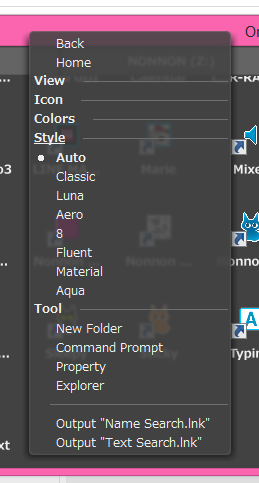
[ win_sizegrip.c ]
サイズグリップだニャ
高 DPI でも適切に描画できるニャ
[ win_smallbutton.c ]
[ win_smallbutton_direct.c ]
エディットコントロールと拙作 TxtBox に小さなボタンを付けることができるニャ
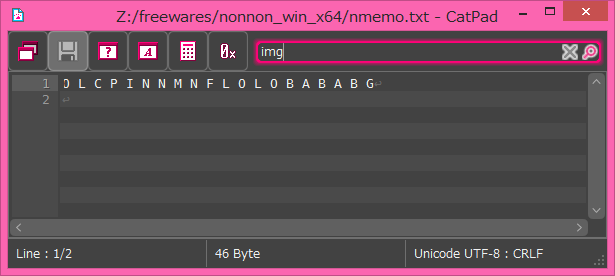
[ win_statusbar_ownerdraw.c ]
ステータスバーのフェイクでダークモード対応版だニャ
使い方をコモンコントロールと似せているので簡単に実装できるはずだニャ
[ win_systray.c ]
通知領域に常駐するプログラムを作る時に使うニャ
 [ win_txtbox.c ]
いろんなコントロールになるものだニャ
◆LISTBOX◆
n_txt の内容を表示するものだニャ
macOS のように縞々にできるニャ
行番号を付けることができるニャ
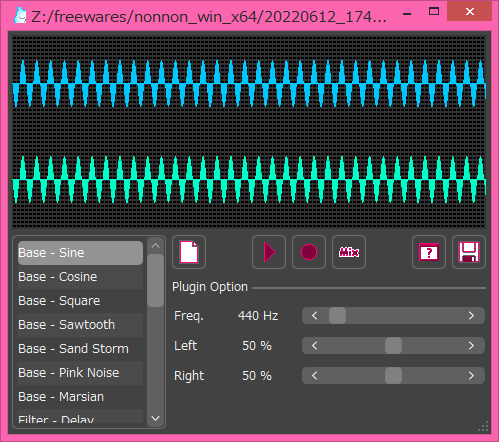
◆ONELINE◆
一行エディット、入力フィールドだニャ
◆EDITBOX◆
テキストエディタだニャ
macOS のように縞々にできるニャ
行番号を付けることができるニャ
◆CMBBOX◆
コンボボックスのインフラだニャ
[ win_txtbox.c ]
いろんなコントロールになるものだニャ
◆LISTBOX◆
n_txt の内容を表示するものだニャ
macOS のように縞々にできるニャ
行番号を付けることができるニャ
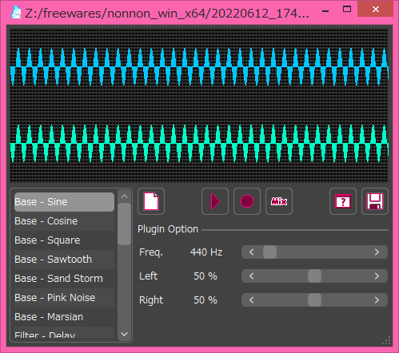
◆ONELINE◆
一行エディット、入力フィールドだニャ
◆EDITBOX◆
テキストエディタだニャ
macOS のように縞々にできるニャ
行番号を付けることができるニャ
◆CMBBOX◆
コンボボックスのインフラだニャ
|